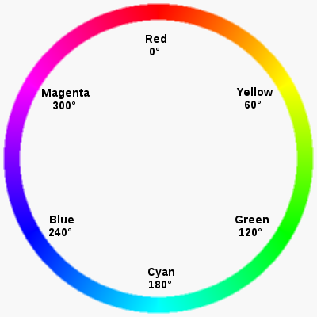

PiicoDev Colour Sensor#
The PiicoDev Colour Sensor allows you to differentiate colour hues and classify objects based on their colour.
Colour Theory#
Red, Green Blue#
The Red, Green, Blue (RGB) colour model is an additive colour model, meaning that it mixes (adds) Red, Green and Blue light to create many colours. RGB is used for displaying the colours on the screen you are reading this article - each pixel emits a certain amount of Red, Green, and Blue light, which - when mixed - creates the colours you’re seeing.
Hue, Saturation, Value (Brightness)#
Hue is a property that describes the colour of the colour - the colour’s identity - red, green, blue, yellow etc. Hue does not describe anything about how bright or intense the colour is.
Saturation is the intensity of colour; A bright red has high saturation, as opposed to a reddish-grey, which has very low saturation.
Value is the amount of light in a colour - A light red has a high value, a dark red has a low value. Usually, this is directly related to light; where there’s light there’s a high-value colour and the opposite in the shadow.
The HSV model is really useful for identifying or classifying colours because the hue property is the base colour. Hue is represented as an angle on a colour wheel, so you can identify a colour using a single variable - the angle. Referring to the colour wheel below, Red is described with a zero-angle, moving through to Green at 120 degrees, Blue at 240 degrees, and back to Red.

Getting set up#
Connect the PiicoDev module to your Micro:bit#
Plug your Micro:bit into the PiicoDev adapter (buttons LED matrix facing up), connect your module to the adapter via the PiicoDev cable and connect your Micro:bit to your computer with a USB lead.
Download the PiicoDev Modules and Example Code#
Create a new folder for this example. Then download the following files and save them to your new folder (Right Click > “Save Link As”).
PiicoDev_Unified.py- The PiicoDev Unified Libraries: Drives I2C communications for PiicoDev modulesPiicoDev_VEML6040.py- The device driver.main.py- an example script for this PiicoDev Sensor
Example code#
The PiicoDev Team has included two examples in the main.py.
[Upload](12_piicodev_intro.md#Uploading to the micro:bit) main.py along with PiicoDev_Unified.py and PiicoDev_VEML6040.py to the micro:bit and then run it.
Example 1#
If you the main.py without making any changes you will get a printout reading of the RGB values being picked up by the sensor.
1# PiicoDev VEML6040 minimal example code
2# This program reads light data from the PiicoDev VEML6040 Colour Sensor
3# Displays Raw Data, and classifies colours as fruits
4
5from PiicoDev_VEML6040 import PiicoDev_VEML6040
6from PiicoDev_Unified import sleep_ms # cross-platform compatible sleep function
7
8# Associate a hue value with a fruit name
9fruitList = {
10 "apple":0,
11 "carrot":60,
12 "lime":120
13 }
14
15colourSensor = PiicoDev_VEML6040() # initialise the sensor
16
17while True:
18 ### Example 1: Print Raw RGB Data
19 data = colourSensor.readRGB() # Read the sensor (Colour space: Red Green Blue)
20 red = data['red'] # extract the RGB information from data
21 grn = data['green']
22 blu = data['blue']
23
24 print(str(blu) + " Blue " + str(grn) + " Green " + str(red) + " Red") # Print the data. Printing as BGR so the Thonny plot-colours match nicely :)
25
26 ### Example 2: Classify the colour being shown - eg. a fruit sorting machine
27# data = colourSensor.readHSV() # Read the sensor (Colour space: Hue Saturation Value)
28# hue = data['hue'] # extract the Hue information from data
29#
30# label = colourSensor.classifyHue() # Read the sensor again, this time classify the colour
31# print(str(label) + " Hue: " + str(hue)) # Show the label and the corresponding hue
32
33 sleep_ms(1000)
Exploring the important parts of that code:
line 6: imports all the commands for the atmospheric sensor from the PiicoDev_VEML6040 library
line 7: import the
sleep_mscommand from the PiicoDev_Unified library and is used the same assleepline 15: labels the Colour Sensor as
sensorline 19: gets a reading from the sensor which returns a dictionary
line 20: extracts the red value from the returned dictionary
line 21: extracts the green value from the returned dictionary
line 20: extracts the blue value from the returned dictionary
line 24: prints the red, green and blue values
Example 2#
Change the code in main.py to the same as the code below (make sure that the indentation of lines 27-30 is correct). This code will get a reading and classify what the sensor is looking at by using the values in the fruitList.
[Upload](12_piicodev_intro.md#Uploading to the micro:bit) main.py along with PiicoDev_Unified.py and PiicoDev_VEML6040.py to the micro:bit and then run it.
1# PiicoDev VEML6040 minimal example code
2# This program reads light data from the PiicoDev VEML6040 Colour Sensor
3# Displays Raw Data, and classifies colours as fruits
4
5from PiicoDev_VEML6040 import PiicoDev_VEML6040
6from PiicoDev_Unified import sleep_ms # cross-platform compatible sleep function
7
8# Associate a hue value with a fruit name
9fruitList = {
10 "apple":0,
11 "carrot":60,
12 "lime":120
13 }
14
15colourSensor = PiicoDev_VEML6040() # initialise the sensor
16
17while True:
18 ### Example 1: Print Raw RGB Data
19# data = colourSensor.readRGB() # Read the sensor (Colour space: Red Green Blue)
20# red = data['red'] # extract the RGB information from data
21# grn = data['green']
22# blu = data['blue']
23
24# print(str(blu) + " Blue " + str(grn) + " Green " + str(red) + " Red") # Print the data. Printing as BGR so the Thonny plot-colours match nicely :)
25
26 ### Example 2: Classify the colour being shown - eg. a fruit sorting machine
27 data = colourSensor.readHSV() # Read the sensor (Colour space: Hue Saturation Value)
28 hue = data['hue'] # extract the Hue information from data
29 label = colourSensor.classifyHue(fruitList) # Read the sensor again, this time classify the colour
30 print(str(label) + " Hue: " + str(hue)) # Show the label and the corresponding hue
31
32 sleep_ms(1000)
Exploring the important parts of that code:
line 6: imports all the commands for the atmospheric sensor from the PiicoDev_VEML6040 library
line 7: import the
sleep_mscommand from the PiicoDev_Unified library and is used the same assleepline 15: labels the Colour Sensor as
sensorline 27: gets a HSV reading which returns a dictionary
line 28: extract the hue value from the dictionary
line 29: gets a hue reading and then returns the closest key from the provided dictionary
if no dictionary is provided it will use a default dictionary of red, yellow, green, cyan, blue and magenta.
line 30: prints the results from the two readings
Commands#
Below are the different commands available for the Atmospheric Sensor
readRGB()#
Returns a dictionary with the Red, Green & Blue colour space.
Parameter |
Type |
Unit |
Description |
|---|---|---|---|
red |
float |
Red reading |
|
green |
float |
Green reading |
|
blue |
float |
Blue reading |
|
white |
float |
Lux |
Ambient light |
cct |
float |
K |
Colour temperature |
readHSV()#
Returns a dictionary with the Hue Saturation Value colour space.
Parameter |
Type |
Unit |
Description |
|---|---|---|---|
hue |
float |
Hue reading |
|
sat |
float |
Saturation reading |
|
val |
float |
Value reading |
classifyHue(hues, min_brightness)#
Returns a classification of the hue.
Default values:
hues={
"red":0,
"yellow":60,
"green":120,
"cyan":180,
"blue":240,
"magenta":300
}
min_brightness=0
Exercises#
Write a program that will print the full return dictionary of a
readRGBevery secondWrite a program that will print the full return dictionary of a
readHSVevery second